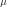
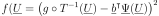

LeastSquaresStrategy¶
-
class
LeastSquaresStrategy(*args)¶ Least squares strategy for the approximation coefficients.
- Available constructors:
LeastSquaresStrategy(weightedExp)
LeastSquaresStrategy(weightedExp, approxAlgoImpFact)
LeastSquaresStrategy(measure, approxAlgoImpFact)
LeastSquaresStrategy(measure, weightedExp, approxAlgoImpFact)
LeastSquaresStrategy(inputSample, outputSample, approxAlgoImpFact)
LeastSquaresStrategy(inputSample, weights, outputSample, approxAlgoImpFact)
Parameters: weightedExp :
WeightedExperimentExperimental design used for the transformed input data. When not precised, OpenTURNS uses a
MonteCarloExperiment.approxAlgoImpFact : ApproximationAlgorithmImplementationFactory
The factory that builds the desired
ApproximationAlgorithm. When not precised, OpenTURNS uses thePenalizedLeastSquaresAlgorithmFactory.measure :
DistributionDistribution  with respect to which the basis is orthonormal. When not precised, OpenTURNS uses the limit measure defined within the
WeightedExperiment.inputSample, outputSample : 2-d sequence of float
The input random variables and the output samples
 that describe the model.
that describe the model.weights : sequence of float
Numerical point that are the weights associated to the input sample points such that the corresponding weighted experiment is a good approximation of . If not precised, all weights are equals to , where is the size of the sample.
Notes
This class is not usable because it has sense only within the
FunctionalChaosAlgorithm: the least squares strategy evaluates the coefficients of the polynomials decomposition as follows:where .
The mean expectation is approximated by a relation of type:
where is a function defined as:

In the approximation of the mean expectation, the set I, the points and the weights are evaluated from methods implemented in the
WeightedExperiment.Methods
computeCoefficients(function, basis, …[, …])getClassName()Accessor to the object’s name. getCoefficients()Accessor to the coefficients. getExperiment()Accessor to the experiments. getId()Accessor to the object’s id. getInputSample()Accessor to the input sample. getMeasure()Accessor to the measure. getName()Accessor to the object’s name. getOutputSample()Accessor to the output sample. getRelativeError()Accessor to the relative error. getResidual()Accessor to the residual. getShadowedId()Accessor to the object’s shadowed id. getVisibility()Accessor to the object’s visibility state. getWeights()Accessor to the weights. hasName()Test if the object is named. hasVisibleName()Test if the object has a distinguishable name. setExperiment(weightedExperiment)Accessor to the design of experiment. setInputSample(inputSample)Accessor to the input sample. setMeasure(measure)Accessor to the measure. setName(name)Accessor to the object’s name. setOutputSample(outputSample)Accessor to the output sample. setShadowedId(id)Accessor to the object’s shadowed id. setVisibility(visible)Accessor to the object’s visibility state. setWeights(weights)Accessor to the weights. -
__init__(*args)¶ x.__init__(…) initializes x; see help(type(x)) for signature
-
getClassName()¶ Accessor to the object’s name.
Returns: class_name : str
The object class name (object.__class__.__name__).
-
getExperiment()¶ Accessor to the experiments.
Returns: exp :
WeightedExperimentWeighted experiment used to evaluate the coefficients.
-
getId()¶ Accessor to the object’s id.
Returns: id : int
Internal unique identifier.
-
getMeasure()¶ Accessor to the measure.
Returns: mu : Distribution
Measure defining the scalar product.
-
getName()¶ Accessor to the object’s name.
Returns: name : str
The name of the object.
-
getRelativeError()¶ Accessor to the relative error.
Returns: e : float
Relative error.
-
getResidual()¶ Accessor to the residual.
Returns: er : float
Residual error.
-
getShadowedId()¶ Accessor to the object’s shadowed id.
Returns: id : int
Internal unique identifier.
-
getVisibility()¶ Accessor to the object’s visibility state.
Returns: visible : bool
Visibility flag.
-
hasName()¶ Test if the object is named.
Returns: hasName : bool
True if the name is not empty.
-
hasVisibleName()¶ Test if the object has a distinguishable name.
Returns: hasVisibleName : bool
True if the name is not empty and not the default one.
-
setExperiment(weightedExperiment)¶ Accessor to the design of experiment.
Parameters: exp :
WeightedExperimentWeighted design of experiment.
-
setMeasure(measure)¶ Accessor to the measure.
Parameters: m : Distribution
Measure defining the scalar product.
-
setName(name)¶ Accessor to the object’s name.
Parameters: name : str
The name of the object.
-
setShadowedId(id)¶ Accessor to the object’s shadowed id.
Parameters: id : int
Internal unique identifier.
-
setVisibility(visible)¶ Accessor to the object’s visibility state.
Parameters: visible : bool
Visibility flag.
 .
.